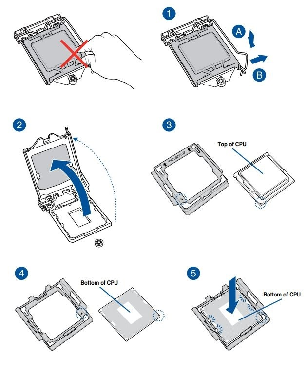
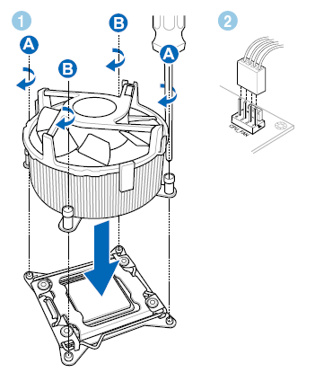
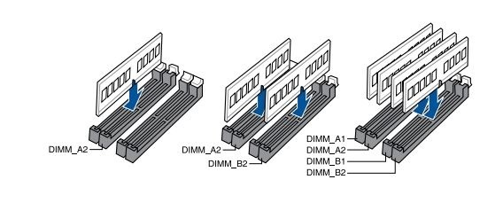
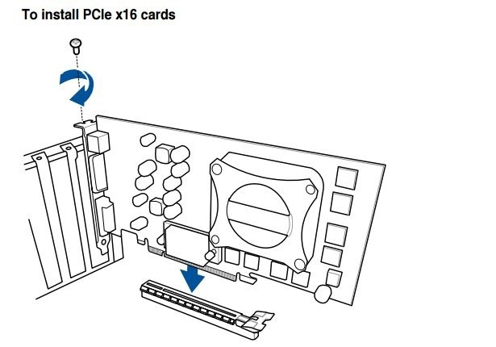
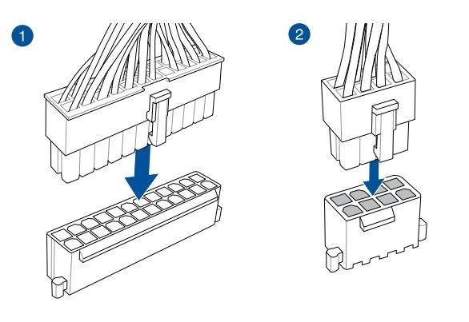
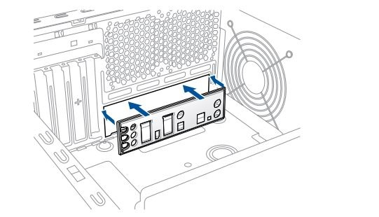
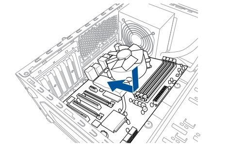
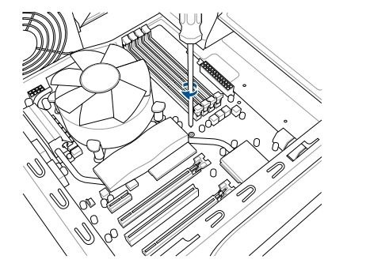
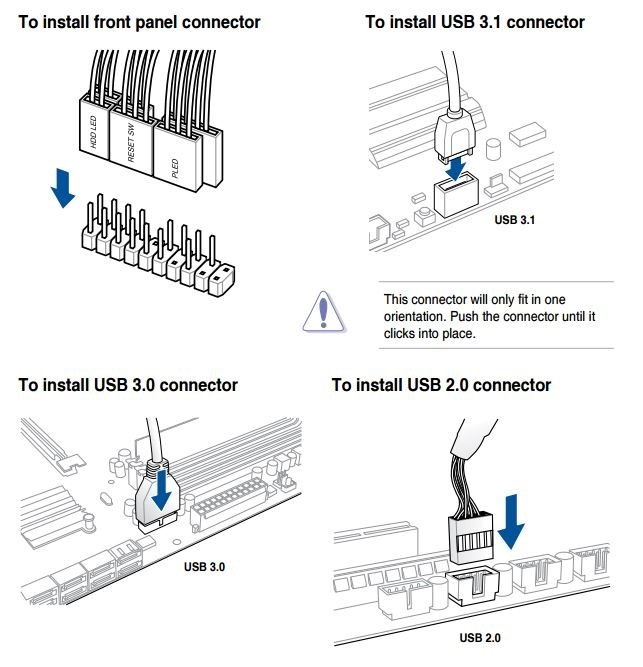
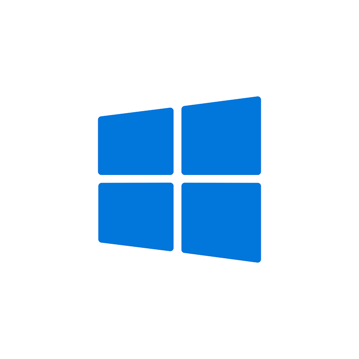

1. Připojení komponentů k základní desce
Zaprvé vložíte procesor do patice, ale pozor musíte ho tam vložit správně, podle toho jestli mate procesor značky amd nebo intel zjistíte jak mmá být procesor otočen a konečně ho vložíte do patice.
2. Instalace chladiče
První část sestavení PC máme úspěšně za sebou. Nyní byste měli nainstalovat chladič na procesor. Postupujte dle návodu přiloženého u zakoupeného chladiče. Postupujte pomalu a s citem, šrouby utahujte nejlépe křížem a postupně.
3. Připojení operační paměti k základní desce
Instalace operačních pamětí se může lišit dle typu a modelu základní desky. Některé mají pouze dva paměťové sloty, jiné čtyři. U desek s dvěma sloty osazujeme oba, u desek s čtyřmi pak minimálně dva, aby byl zajištěn chod dual-channelu. Správné pořadí u vaší desky opět prozradí manuál.
4. Instalace grafické karty
Dalším krokem stavby PC je montáž grafické karty. Většina dnešních grafických karet něco váží, a tak je potřeba při instalaci kartu neustále držet a podpírat, než se náležitě uchytí. Ve většině případů se používá první PCI-E 16x slot, je to ten nejblíž patici s procesorem. Při sestavování PC se v případě nejasností raději podívejte do manuálu desky. Další odstavec seriálu "Jak sestavit PC" věnujeme zapojení SSD či HDD disku.
5. Zapojení SSD/HDD disku
Obrázek znázorňuje správné zapojení pevných disků do SATA konektorů. Stejným způsobem můžete připojit i optickou mechaniku.
6. Připojení napájecího zdroje k základní desce
7. První spuštění sestaveného počítače
Pokud není k dispozici samostatné tlačítko „Power“, resp. „Start“ pro zapnutí přímo na desce, je potřeba propojit dva kontakty PWRSW a deska se zapne. Stačí použít například šroubovák. Pokud naběhne obraz a je možnost se dostat do UEFI, je pravděpodobně vše v pořádku. V této fázi sestavování PC si už klidně můžete nainstalovat operační systém ještě před vložením do skříně, záleží na vás.
8. Instalace již osazené základní desky do počítačové skříně
Seriál "Jak na montáž počítače" se blíží ke konci, přesněji řečeno už nás čeká poslední hardwarový zásah. Nyní odpojte už pouze zdroj, SSD disk a grafickou kartu a můžete začít s instalací základní desky do počítačové skříně. Pokud to chladič umožňuje, můžete nechat namontovaný i ten.
Začněte krytem zadních konektorů základní desky
Jako první musíte do skříně nainstalovat tzv. I/O shield, kryt zadních konektorů základní desky, který najdete mezi příslušenstvím v balení.
 Jak umístit základní desku do počítačové skříně
Základní desku vložíte do počítačové skříně tím způsobem, že zadní část s konektory nasunete do I/O shieldu, tím získáte správné zarovnání a současně zkontrolujete, zda montážní otvory pro šroubky v desce sedí se závity distančních sloupků ve vaší skříni. Pečlivě zašroubujete všechny šroubky, čímž pevně přichytíte základní desku do skříně.
Umístění kabelů v počítačové skříni
Při stavbě PC doporučujeme projít si přiložené materiály vč. manuálu k vaší počítačové skříni, které vám dají představu o tom, jak má skříň vymyšlené vedení kabeláže, tzv. cable management. Rozdíly v uspořádání a vedení kabelů od zdroje dělají velké rozdíly v designu, ale i v chlazení po stránce průtoku vzduchu (tzv. airflow). Zároveň vám manuál napoví, kam a jak umístit pevné disky (SSD/HDD) či optické mechaniky, každý model skříně má toto vymyšlené jinak.
Zapojení kabeláže od skříně
Jakmile máte základní desku nainstalovanou, zapojte zbytek konektorů, jako jsou USB, AUDIO, FAN konektory a kabeláž pro propojení se skříní.Obrázek znázorňuje zapojení kabeláže od skříně a konektory USB. Mějte na paměti, že každá základní deska má lehce odlišné rozložení konektorů, a proto postupujte vždy podle manuálu, který naleznete v balení. "Jak postavit počítač: level komponenty" je za námi, montáž PC je v podstatě hotová, nyní už pouze doplňky jako klávesnice, myš a monitor.
Stavba PC hotova. Instalace operačního systému a otestování stability
Nejsložitější část stavby nového počítače máte úspěšně za sebou a nyní je potřeba přikročit k instalaci operačního systému. Konkrétně Windows 10, protože nad ničím jiným nemá cenu uvažovat. I výrobci nejnovějších procesorů Ryzen a Kaby Lake jsou v tomto zcela za jedno. Doba Windows 7 a 8.1 je zkrátka už pryč. Instalace Windows 10 má v domácím prostředí dvě základní varianty. Buď máte k dispozici instalační DVD nebo si vyrobíte bootovací USB flashdisk. Druhá varianta je většinou výrazně rychlejší zejména pokud využijete USB 3.0. V ideální situaci se budete během čtvrt hodinky přihlašovat ke svému Windows účtu.
